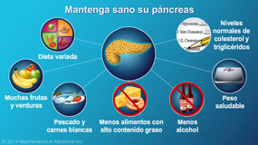

Beneficios y propuestas de mejora
Elabora enzimas digestivas que su cuerpo utiliza para descomponer y procesar los alimentos. El páncreas también elabora insulina, la hormona que regula el azúcar (glucosa) en la sangre y si quieres evitar esto deja de beber alcohol. Incluso si no se considera que el alcohol sea la causa de la pancreatitis aguda, es prudente dejar de beber alcohol mientras te recuperas, tambien dejar de fumar. Si fumas, deja de hacerlo.
